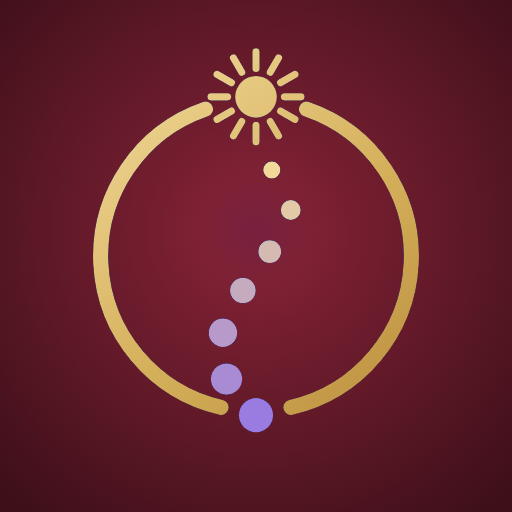

<!doctype html>
<!-- Astro River social template. One page, five kinds, three formats. Rendered by make.js; content comes in ?d=<json>.
     Identity = the home page, round 4.5: the same colour tokens, Cormorant + Inter, the warm-maroon crest as the signature.
     Rules: one strong picture; at most three type sizes (overline 22, headline, body 30); an overline in small caps,
     never pill tags; one signature row, in the same place on every post; no decorative lines, watermarks or orange. -->
<html><head><meta charset="utf-8"><title>Social post — Astro River</title>
<style>
@font-face{font-family:"Cormorant";src:url("fonts/CormorantGaramond[wght].ttf");font-weight:300 700}
@font-face{font-family:"Inter";src:url("fonts/Inter[opsz,wght].ttf");font-weight:100 900}
@font-face{font-family:"Cinzel";src:url("fonts/Cinzel[wght].ttf");font-weight:400 900}
@font-face{font-family:"Tiro";src:url("fonts/TiroDevanagariHindi-Regular.ttf")}
/* round-4 tokens (light, and Night A for evening and festival-night posts) */
:root{--bg:#fbf6ec;--surface:#fffdf8;--line:#ecdfc6;--text:#2b2326;--muted:#645a6c;--heading:#2c1a1f;--accent:#7a2233;--gold:#b8862f;--gold-text:#836017}
[data-theme=night]{--bg:#15100c;--surface:#241b15;--line:#3a2d22;--text:#f3e9d7;--muted:#b9a793;--heading:#f2dcae;--accent:#f0a77e;--gold:#e2bd72;--gold-text:#e2bd72}
*{box-sizing:border-box;margin:0;padding:0}
html,body{background:var(--bg)}
.post{position:relative;overflow:hidden;background:var(--bg);display:flex;flex-direction:column;font-family:"Inter",sans-serif}
/* formats. Story keeps everything out of the top 250 and bottom 250 px. */
.feed{width:1080px;height:1350px;padding:72px 72px 180px}
.story{width:1080px;height:1920px;padding:250px 72px 370px}
.square{width:1080px;height:1080px;padding:64px 72px 170px}
.art{flex:1;min-height:420px;border-radius:24px;overflow:hidden;position:relative;background:var(--surface)}
.art img{width:100%;height:100%;object-fit:cover;display:block}
.art svg{position:absolute;inset:0;width:100%;height:100%}
.txt{padding-top:52px}
.over{font:700 22px/1.3 "Inter";letter-spacing:.2em;text-transform:uppercase;color:var(--gold-text)}
h1{font:500 84px/1.02 "Cormorant";color:var(--heading);margin-top:16px;letter-spacing:-.005em}
h1 .dev{font-family:"Tiro",serif;font-size:.62em;color:var(--accent);margin-left:14px;letter-spacing:0}
.body{font:400 30px/1.45 "Inter";color:var(--text);margin-top:18px;max-width:900px}
.deadline{font:600 30px/1.4 "Inter";color:var(--accent);margin-top:18px}
.rows{margin-top:28px;display:grid;gap:22px}
.rows div{display:flex;gap:28px;font:400 30px/1.2 "Inter";color:var(--muted)}
.rows div span{width:220px;flex:none;font-variant-numeric:tabular-nums}
.rows div b{font-weight:600;color:var(--heading)}
.square .txt{padding-top:40px}.square h1{font-size:72px}
/* the signature: crest + name + site, same place on every post of a format */
.sig{position:absolute;left:72px;right:72px;display:flex;align-items:center;gap:18px}
.feed .sig{bottom:64px}.square .sig{bottom:60px}.story .sig{bottom:250px}
.sig img{width:56px;height:56px;border-radius:14px}
.sig .n{font:600 22px/1 "Cinzel";letter-spacing:.14em;color:var(--heading)}
.sig .u{margin-left:auto;font:500 22px/1 "Inter";color:var(--muted)}
</style></head>
<body>
<div id="post"></div>
<script>
const P = new URLSearchParams(location.search);
const d = JSON.parse(P.get('d'));
const fmt = P.get('fmt') || 'feed';
document.documentElement.dataset.theme = d.theme || 'light';
// Fine gold line-work over the night sky for transits: the ecliptic, the two signs, the graha moving between them.
const linework = t => `<svg viewBox="0 0 1000 1000" preserveAspectRatio="none" aria-hidden="true">
  <path d="M-20 700 Q500 420 1020 700" fill="none" stroke="#e2bd72" stroke-width="1.6" opacity=".9" vector-effect="non-scaling-stroke"/>
  <path d="M500 505 L500 600" stroke="#e2bd72" stroke-width="1.6" opacity=".9" vector-effect="non-scaling-stroke"/></svg>
  <div style="position:absolute;left:0;right:0;top:61%;display:flex;justify-content:space-between;padding:0 16%;font:700 22px/1 Inter;letter-spacing:.2em;color:#e2bd72">
    <span>${t.from.toUpperCase()}</span><span>${t.to.toUpperCase()}</span></div>
  <div style="position:absolute;left:calc(50% + 26px);top:calc(56% - 14px);width:28px;height:28px;border-radius:50%;background:#e2bd72;box-shadow:0 0 0 8px rgba(226,189,114,.22)"></div>
  <div style="position:absolute;left:calc(50% + 4px);top:calc(56% - 64px);font:700 22px/1 Inter;letter-spacing:.2em;color:#e2bd72">${t.graha.toUpperCase()}</div>`;
document.getElementById('post').outerHTML = `<div class="post ${fmt}">
  <div class="art"${d.artHeight ? ` style="flex:none;height:${d.artHeight[fmt] || d.artHeight.feed}px"` : ''}>${d.transit ? linework(d.transit) : ''}</div>
  <div class="txt">
    <div class="over">${d.over}</div>
    <h1>${d.h}${d.hHi ? `<span class="dev">${d.hHi}</span>` : ''}</h1>
    ${d.body ? `<p class="body">${d.body}</p>` : ''}
    ${d.rows ? `<div class="rows">${d.rows.map(([a, b]) => `<div><span>${a}</span><b>${b}</b></div>`).join('')}</div>` : ''}
    ${d.deadline ? `<p class="deadline">${d.deadline}</p>` : ''}
  </div>
  <div class="sig"><span class="n">Astro River Institute</span><span class="u">astroriver.com</span></div>
</div>`;
</script>
</body></html>
